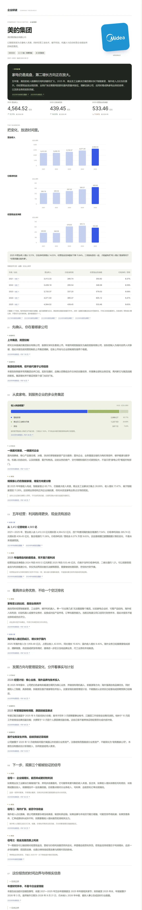

作品集
从真实的痛点出发，用 AI 把想法做成能上线、能用的产品。需求、设计、取舍和验收由我负责，代码与 AI 协作完成。
企业研读Company Research Desk
输入一家公司，AI 联网研读公开资料，生成带出处的结构化研究报告。


48 次迭代提交
7 轮浏览器 QA
OpenAI / Claude / 千问 / DeepSeek / 自定义
年报与中报分开呈现
解决什么问题
求职、谈合作或做投资前，想看清一家公司：资料散落在年报、公告和新闻里，花一晚上也拼不出全貌，还容易查错同名公司、被二手信息误导。
核心能力
-
先确认主体，再开始研究
优先查询公开证券名称索引（6,000+ 家），重名企业由用户选定，避免研究错公司。
-
联网研究，来源可追溯
模型按固定研究框架自主检索；事实、公司表述、计算与推演分开标注，出处随段落外链。
-
财务可视化，绝不编造
近五年营收、利润、现金流趋势；每项注明年度、单位和口径，缺失数据如实标出，不补造。
-
后台研究，一键导出
研究在后台运行，可随时查看进度；报告支持图文 HTML 与 PDF 导出，手机上也能读。
我怎么用 AI 把它做出来
- 01定义产品
先写产品方向文档和验收标准：做给谁、解决什么、哪些信息绝不能编造。
- 02AI 协作编码
用 Codex 实现前后端；我负责拆需求、审方案、做取舍，让 AI 专注写代码。
- 03测试与回归
每个版本跑自动化测试和浏览器截图回归，问题有记录、修复可追溯。
- 04部署与迭代
部署到腾讯云轻量服务器，按真实使用反馈持续迭代。
合成小鸡Chick Merge
放置 + 合成 + 重生的手机小游戏，打开浏览器就能玩。

逐版试玩打磨
4 个主题世界
每天随机一种
单个 HTML 文件即可运行
为什么做它
想验证一件事：非计算机科班出身，能不能和 AI 一起，从零做出一个结构完整、让人愿意"再玩一局"的产品。它考验的不是代码，而是玩法设计、节奏把控和对细节的要求。
核心玩法
-
放置 · 合成 · 重生
召唤动物、拖动两只相同的合成更高级的一只；重生换取永久加成，形成长期目标。
-
每日挑战
每天随机一种规则：幸运日、空投潮、暴击日、加时赛……限时冲分，每天都有新鲜感。
-
离线收益与自动存档
离开期间动物继续赚金币，回来有"欢迎回来"结算；进度自动保存在本机。
-
声画反馈
连击光效、震屏和粒子；背景音乐与音效由程序实时合成，支持手机震动与减少动效设置。
我怎么用 AI 把它做出来
- 01设计玩法
先定核心循环：召唤 → 合成 → 赚钱 → 重生，再规划数值曲线和解锁节奏。
- 02对话式开发
与 Claude 逐轮对话实现功能，我描述体验目标，AI 负责实现。
- 03试玩调优
每个版本亲自试玩，调手感、节奏与难度，一路迭代到 v16。